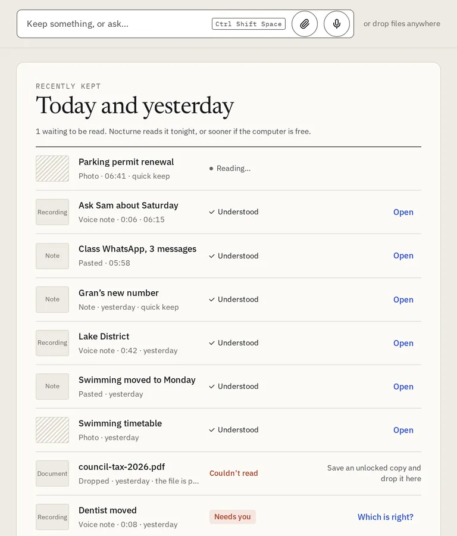
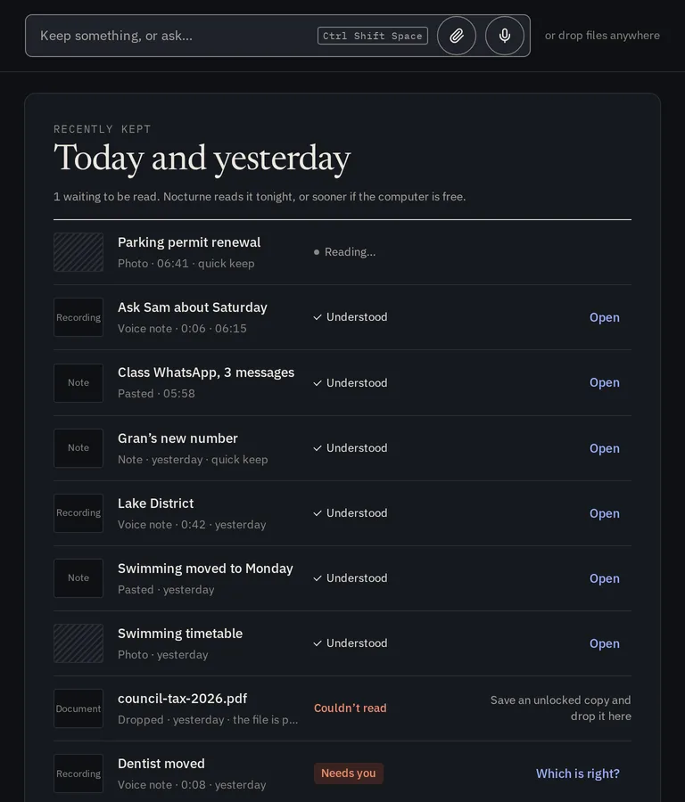

Keep · any time
Keep anything, file nothing.
Press Ctrl Shift Space, or Cmd Shift Space on a Mac, then type, talk, paste or drop a photo or a PDF. Nocturne says “Kept.” and you get back to your day. No folders or tags to keep up: you ask, and it finds it. If it cannot read something, it tells you what to do.

